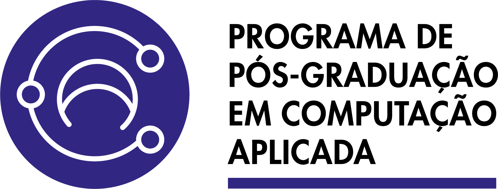

Meio Ambiente
Computação aplicada ao uso responsável de recursos e ao desenvolvimento regional focado na preservação dos biomas locais.
14-16 Set · UFMT · Cuiabá MT
Semana Acadêmica de Tecnologia, Computação e Inovação com foco em Computação Verde e Tecnologias Inteligentes para um Futuro Sustentável.
Sobre
A SEMATEC UFMT 2026 reúne estudantes, pesquisadores, profissionais e comunidade para discutir como a computação pode acelerar soluções ambientais, formar pessoas e aproximar inovação tecnológica de desafios reais do território.
A programação conecta Computação Verde, inteligência artificial, dados, automação, sustentabilidade, inovação e educação tecnológica em uma experiência acadêmica intensa, visualmente contemporânea e aberta à colaboração.
Computação aplicada ao uso responsável de recursos e ao desenvolvimento regional focado na preservação dos biomas locais.
Projetos, pesquisas e conexões entre universidade, setor produtivo e sociedade para criar ecossistemas resilientes.
Tecnologias, infraestruturas e práticas digitais pensadas para reduzir o impacto ambiental de data centers e algoritmos.
Modelos inteligentes aplicados à energia, clima, educação, gestão e tomada de decisão ética para o bem comum.
Atividades
Uma programação para aprender, prototipar, apresentar pesquisas e discutir tecnologia com responsabilidade ambiental.
Conversas com especialistas sobre IA, computação verde, inovação pública, clima, dados e tecnologia aplicada.
Ver maisExperiências práticas em programação, dados, sensores, automação, IA e ferramentas para soluções sustentáveis.
Ver maisPesquisas, relatos técnicos e resultados acadêmicos conectando computação, inovação e sustentabilidade.
Ver maisSessões colaborativas para transformar problemas ambientais e urbanos em protótipos, redes e ações possíveis.
Ver maisProgramação
De 14 a 16 de setembro, uma agenda para circular entre pesquisa, prática, tecnologia e meio ambiente.
Palestra de abertura
Minicursos — Sessão 1
Palestra
Computação e sustentabilidade
Minicursos — Sessão 1 (continuação)
Dados e automação
Workshop
Palestra
Workshop (continuação)
Monitoramento ambiental, visualização e tomada de decisão
Tecnologia e território em Mato Grosso
Palestra
Redes e automação
Minicursos — Sessão 2
Workshop
Palestra
Minicursos — Sessão 2 (continuação)
Palestra
Última sessão de apresentações científicas
Palestra
Minicursos — Sessão 3
Kickoff das equipes
Palestra
Apresentação dos protótipos
Submissões
Submeta pesquisas, relatos e propostas que aproximem computação, inovação e sustentabilidade.
Trabalhos consolidados com resultados e contribuições significativas. Avaliação duplo-cega.
Pesquisas em andamento ou resultados preliminares. Ideal para estudantes de graduação.
Proponha um curso prático de 3h sobre tecnologias relevantes para a comunidade.
Tópicos de interesse
Palestras
Programação fictícia para visualizar como os destaques das palestras aparecerão no site.
Uma visão prática sobre como modelos inteligentes podem apoiar decisões ambientais, reduzir desperdícios e aproximar tecnologia de impacto social.
Dra. Helena Costa Saiba maisSensores, conectividade e dados ambientais aplicados a decisões mais responsáveis no campo.
Dr. Rafael Nogueira Saiba maisComo plataformas digitais ajudam a monitorar, automatizar e fortalecer infraestruturas sustentáveis.
Dra. Marina Tanaka Saiba maisVisualização, análise e modelos preditivos para apoiar planejamento urbano e decisões públicas.
Dr. Augusto Lima Saiba maisDr. Rafael Nogueira
Saiba maisInscrições
Inscrições via sistema ECOS da SBC. Associados têm desconto especial.
Estudante
Clique em Ver mais para ver valores completos.
Ver maisPesquisa
Clique em Ver mais para ver valores completos.
Ver maisDocente
Clique em Ver mais para ver valores completos.
Ver maisMercado
Clique em Ver mais para ver valores completos.
Ver maisLocal
Instituto de Computação da Universidade Federal de Mato Grosso, campus Cuiabá.
Av. Fernando Corrêa da Costa, 2367
Boa Esperança — Cuiabá, MT
CEP 78060-900
14 a 16 de setembro de 2026
Cuiabá · MT
Programação em breve
Cuiabá possui diversas opções de hotéis próximos ao campus da UFMT.
Organização
Apoio
Instituições que apoiam a realização da SEMATEC UFMT 2026.
Assembleia Legislativa do Estado de Mato Grosso
Governo do Estado de Mato Grosso
Programa de Pós-Graduação em Computação Aplicada
